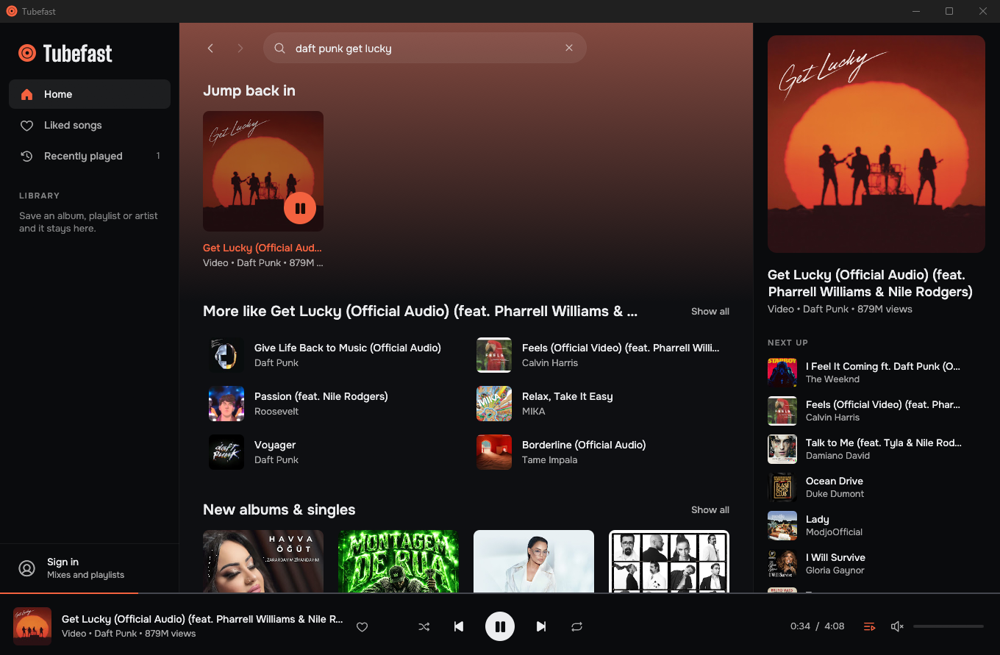

YouTube Music,
native and fast.
Tubefast is a desktop player for Windows, macOS and Linux, written in Rust. It talks to YouTube directly, decodes the audio itself and draws every pixel natively. There is no Chromium and no WebView inside.
For Windows, macOS and Linux. See how to install on yours.

What it costs to run
-
0.1–0.3 s
Until the window is on screen
-
~100 MB
Memory while playing
About 60 MB of it is private. This is the working set a few seconds into playback. It grows with window size and with how much artwork you have scrolled past.
-
under 1 %
CPU while playing
The window repaints only when something changes, so an idle one uses no CPU.
-
9 MB
The whole program
One exe. Nothing is installed and nothing is left behind when you delete it, apart from your library in your user profile.
Measured on the release build on Windows 11. The first launch from a new folder used about 60 MB more on the test machine (NVIDIA driver), once.
What you get
-
Search as you type
Results appear while you type. Artist, album and playlist pages, with back and forward history.
-
A queue that keeps going
When the queue runs out, a radio based on the last track continues it. Shuffle and repeat included.
-
A queue you cannot lose
Close the app and the queue, the track and the position are still there next time. Undo brings back a queue you replaced by accident.
-
Lyrics that follow the song
Line by line when YouTube Music has timed lyrics, plain text when it does not.
-
Media keys
Play, pause, next and previous work from any window, and the track shows up in the Windows media overlay, in Now Playing on macOS and in the media controls of Linux desktops.
-
Updates itself
One click installs a new version and restarts with your queue where it was.
-
Works signed out
Everything except your personal feed and your playlists works without an account. Sign in and you get your own YouTube Music feed.
-
Your library, kept locally
Liked songs, listening history and saved albums, playlists and artists live on your computer.
-
Real covers
Music videos show the album cover of the song instead of a video frame whenever YouTube knows which song it is.
-
Keyboard first
Shortcuts for everything that matters, plus accessible names on every control for screen readers.
How it stays small
-
Data
It comes from the same internal API the YouTube Music website uses. Responses are parsed while streaming, and the parts Tubefast never shows are skipped before they are allocated.
-
Audio
It is fetched progressively, decoded with Symphonia on its own thread and handed to rodio. The interface never waits for the network. Tracks longer than about eight minutes keep a sliding 8 MB window in memory instead of the whole file, so an hour-long mix costs the same as a song.
-
Interface
It is immediate-mode egui on OpenGL, and it repaints only when something changes.
Install
Windows
With Scoop
Scoop installs it without a Windows warning.
scoop install https://github.com/yigitbozyaka/tubefast/releases/latest/download/tubefast.jsonBy hand
- Download tubefast-windows-x64.zip.
- Right-click the zip, choose Properties, tick Unblock and press OK.
- Unzip it anywhere and run
tubefast.exe.
Step 2 is there because Tubefast is not code signed. Windows trusts a new program only after enough people have run it, so without that step the first launch shows “Windows protected your PC”. If you see it, choose More info, then Run anyway.
macOS
Apple silicon and Intel, macOS 11 or later
- Download tubefast-macos-universal.zip and unzip it.
- Move
Tubefast.appto Applications. - Clear the download flag once, then open it as usual:
xattr -dr com.apple.quarantine /Applications/Tubefast.appStep 3 is there because Tubefast is not notarized by Apple yet. Without it, macOS says the app “is damaged and can’t be opened”.
Linux
AppImage
For x86-64 distributions with glibc 2.35 or newer, such as Ubuntu 22.04, Debian 12 or Fedora 36. Download Tubefast-x86_64.AppImage, make it executable and run it:
chmod +x Tubefast-x86_64.AppImage
./Tubefast-x86_64.AppImageInstalled, with a menu entry
Download tubefast-linux-x64.tar.gz and run its installer. It puts Tubefast in ~/.local/bin and adds it to your app menu. install.sh --uninstall removes it again.
tar -xzf tubefast-linux-x64.tar.gz
tubefast/install.shCheck what you downloaded
Every release is built by GitHub from the public source. You can confirm that your download is one of them:
gh attestation verify tubefast-windows-x64.zip --repo yigitbozyaka/tubefastUse the name of the file you downloaded. Each release also lists the SHA-256 of every download in SHA256SUMS.txt.
Build it yourself
You need Rust 1.90 or newer.
git clone https://github.com/yigitbozyaka/tubefast
cd tubefast
cargo run --releaseGood to know
-
Tubefast is unofficial
It is not affiliated with, endorsed by or sponsored by YouTube or Google.
-
It can break
YouTube changes its internal API without notice. The settings that usually need changing live in one small file,
clients.json. When playback fails, Tubefast fetches the current copy from the repository and tries again, so most breakages are fixed for everyone with one commit and no new download. -
It talks to YouTube and GitHub
At start it reads
clients.jsonand checks whether a newer release exists. Nothing about you is sent, and there is no telemetry. -
Linux builds are new
Windows and macOS are where it is used most. On Linux the fallback font for non-Latin scripts is still missing, and bug reports from Linux are very welcome.
-
Audio is 128 kbps AAC, for now
Higher quality is on the list, next to a tray icon, a light theme and syncing likes back to your account.
-
Use it at your own risk
YouTube's Terms of Service do not provide for third-party clients, and nobody can promise how YouTube treats accounts that use one. If that worries you, stay signed out.
Credit
Tubefast exists because of Spotifast by @crmne. Spotifast showed that a streaming client can be a small native app instead of a browser in disguise. Tubefast takes the same idea and the same choices (Rust, egui, no browser engine) and applies them to YouTube Music. If you use Spotify, go and star it.
Client parameters are kept in step with the research done by the yt-dlp project. Icons are Phosphor. Typefaces are Onest and Big Shoulders Display.